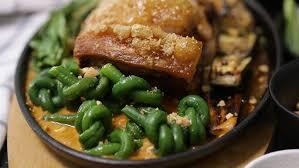

Crispy kare-kare Recipe

Kare-kare is a traditional Filipino stew made with oxtail, vegetables, and a rich peanut sauce.
Ingredients:
For the pork:
- 1.5 kg pork belly slab (skin on)
- 4pcs bay leaves
- 1 tsp peppercorns
- Salt to taste
- Water as needed
For the Nut Blend
- 1 cup peanuts
- 1/2 cup hazelnuts
- 1/2 cup walnuts
- 1/2 cup almonds
For the Sauce
- Annatto seeds as needed
- Cornstarch as needed
- Oil as needed
- Sugar to taste
- Pork stock
For the Vegetables
- 1 bunch of sitaw (string beans)
- 1 bunch of eggplant
- 1 bunch of petchay (bokchoy)
Instructions
- Boil Pork: In a pot, boil pork belly with bay leaves, peppercorns, and salt until tender (about 1 to 1 1/2 hours).
- Dry & Crisp: Let pork cool and dry. Air-fry or deep-fry until crispy. Slice into serving pieces.
- Prepare Nut Blend: Toast mixed nuts. Then Blend with a bit of water until smooth and thick.
- Make Annatto Oil: Heat oil with annatto seeds. Strain and keep the red oil.
- Cook Sauce: In the annatto oil, simmer nut mixture, pork stock, and sugar. Add cornstarch slurry to thicken.
- Blanch Veggies: Blanch the sitaw and pechay. Fry eggplants in a little oil until soft and brown.
- Assemble: Plate vegetables and sliced pork. Pour nut sauce over.